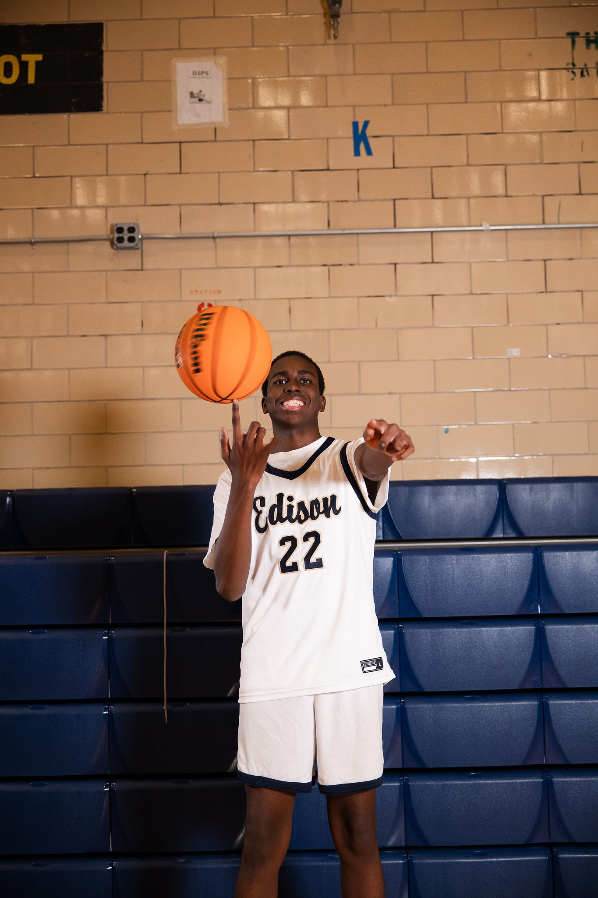

Quinn Oudkerk
Student at Thomas A Edison Career and Technical High School
The purpose of this portfolio is to show my personal growth throughout my work in Web Design and be able to show people like teachers, my peers, and even colleges my work.
Links
Added links from the Curator Guide.
Featured Project
Each project includes an embed and a reflection.
Holidays(Draw) Animation Project
This is my featured project because it's my favorite project and it shows my best work becauase I was able to animate a holiday project I made to make the snow fall in the background.
Skills: HTML, CSS, Flexbox